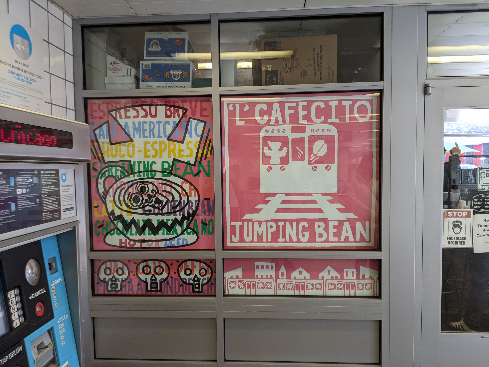

Map Of Pilsen | Source: Openstreetmap.org

'L' Cafecita at Damen 'L' station | source: own photo

'L' Cafecita at Damen 'L' station | source: own photo
Chicago’s neighborhoods are fluid – they very much always have been. With hundreds of immigrant groups, from the Irish and Germans, to Czechs (Bohemians), Poles and more recently Lantinx1, the city is ever changing, contributing to the energy and the success of business in Chicago’s historic second city. Pilsen is no different – it may be Hispanic (Lantinx4) today, but hasn’t always been, and for over 150 years2, blue collar Pilsen has worked hard to build a community, one with a far stronger sense of community than even any other Neighborhood I have visited yet, and this shines through no matter who you speak to.
With that in mind, I entered Pilsen through Damen station. I chose Damen as point of arrival in to the neighborhood because despite the beauty of 18th street (seen later on), Damen is unique – it is one of the ‘L’s only stations to have a privately run coffee shop. ‘L’ Cafecito Jumping Bean (Pun Intended) is a part of what are now a 2 local café chain3 – the main café, which opened in 1994 on 18th street, and this little gem, hidden right at the edge of Pilsen, which to this day serves hot, freshly brewed coffee to the busy commuter (or on occasion, college student!). One thing I loved about this coffee shop was the atmosphere inside the shop, with murals all-round the sides converting what was otherwise a heartless steel and glass box into a café with character. The staff were incredible friendly, giving us advice on where in their wonderful neighborhood to go visit, and so after drinking the coffee (a very good coffee!), we started our trip around Pilsen.
Following advice from the café worker, we headed north to a huge mural under the railyard at 17-14th and Damen – and it was definitely worth seeing. These murals are very long, consist of many arbitrary characters and were done in honor of famous north side mural artist Peter Berry5. Facing onto 14th and welcoming people to artistic Pilsen are now another 2 blocks of murals, with pictures of everything from the famous Chicago Hot Dog (no ketchup here!) to sports teams like the bulls and even Chance the RapperGoogle Lens,6, and show many tributes to Chicago’s popular culture. I like the fact that here, the concrete slabs have been used as frames giving a gallery of smaller, more detailed murals (contributed to by over 60 artists5). This kind of street art is what makes Pilsen unique as a neighborhood, and these newest additions were only the first of many pieces that we would see on tour of the neighborhood.

Next we come to a building that has been the subject of much controversy in the neighborhood, St Adalbert’s church. Having been open over a hundred years and originally serving the Polish Catholics9, the church (now majority Latinx) finally closed its doors in July 2019, and at that point ceased to be holy8. Like many of Pilsen churches11, a declining mass and aging building means this property became too expensive to maintain, forcing the owners to sell the building off to private developers City Pads. Infamous in Pilsen for painting over a mural of the famous casa Aztlan community center8,10, the developer has (hopefully) seen the error of its ways and the church should be converted to a community center, instead of the original plan for apartments – apartments will instead be built around the church. Importantly, at least 20% will be marked as affordable, in a neighborhood where large town developers, much like in Chinatown and South loop, are increasingly gentrify and causing rent to go up. Given how ingrained in the community this building was, and the significant political activity of Pilsen7,8,10, there has been a distrust in developers like this, particularly in a neighborhood where even a neighborhood café like the Jumping Bean is seen as gentrification.

Next on our tour, another mural. Justice Roe’s mural on 16th and Ashland was painting 2013-2014 and is an absolute splash of color that was designed to cover up less visually appealing graffiti that previously covered these walls. Consisting of many shapes overlapping (the blue shark fin style shapes really stick out to me) the mural mainly consist of blues, whites, yellows, reds and pinks. I like that fact the 25th ward has commissioned this12, showing support for the murals, painters and culture of color that has developed in the neighborhood.
The next landmark we came across was also a mural – reading Hope, Respect, Jobs, Dignity, this mural represents social justice, and was created in 2010 by a group of artists called Yocalli Arts Reach. They are funded by the National Museum of Mexican Art in Pilsen13 – this is another example of the local community investing in local change. The building is also significant – it is a homeless shelter called the San Jose Orebro Mission and while it started in 1981 offering short term/emergency accommodation, it has since moved to offering long term services including rehabilitation and training courses in management to help people get back on their feet14. This kind of community rehabilitation is what makes the Pilsen community so successful, and the ability of the Pilsen community to get youth involved on large projects like this which develop the community and add to the neighborhoods prosperity and community feel. This mural was actually one of my favorites, because it reminds people that homeless people have dignity to, and represents the mission of the building it is placed on.

The next thing we saw, wasn’t a mural, or a building – it was a cat – no, seriously. When we were walking down 19th street, we stopped to admire a cat for a second, and ended up striking up a conversation with a local. She was widowed and living with multiple animals, and had lived in the neighborhood for many years. One thing she noted was that in recent years the Hispanic population had started to reduce for the first time, but that she still loved the neighborhood for the friendliness of the residents and its community feel – this, as ever, is a sign that Pilsen is once again undergoing a change, like the first change from Bohemian to Hispanic2, and shows that neighborhoods never stay the same. There has been a movement in neighborhoods like Pilsen to buy up property7,15, to stop large developers like City Pads from coming in and gentrifying – with Pilsen’s strong political activity this has been more prominent here than in most ‘Hipster’ neighborhoods and shows how far locals are willing to go to keep their community. One thing I did notice, particularly in Pilsen between 18th and Halstead, was that gentrification was already taking hold here with small apartment blocks appearing between traditional houses.

Next, we discovered Pilsen’s green space – Dvorak park. Originally built in 1907 and named in honor of Czech Composer Anton Dvorak (1841-1904) 16 as a tribute to the areas large Bohemian Population at the time, the park was designed by Jens Jenson in Prairie style architecture. The park originally included a bathhouse and fieldhouse, as well as children’s garden. This was later expanded to include soccer fields and a throughway, and there is also now a mural on the side of the fieldhouse (‘Unity’) and on the walls of the bathhouses. The park is now a community hub with a computer suite, an art room with arts partner, ElevArte, and regularly hosted events in the park grounds, including cinema nights, an annual pumpkin patch and Hispanic heritage celebrations16. This kind of facility adds green space into a very dense neighborhood and give people a meeting place right at the core of the neighborhood. I like the fact that murals have been painted on the walls of the park representing unity and community and giving the park color and points of visual interest.


Next, we passed through the Carpenter/Cullerton corridor – home to many large building sized murals all facing onto the corner, and visible from the park. There 3 huge, key murals here that have representations based in Hispanic American culture11. The first of these is of Mary holding Jesus after he was taken down from the cross, and represents the fragility of the human body, and well as humanizing Jesus. One thing in this mural of particular current relevance is the city of Chicago hidden behind a wall in the desert – a pictorial representation of the barrier in the desert that is being created to keep away the people that have built and thrived in this neighborhood for decades. Intertwining with this political reference, the second (and my favorite) of the 3 murals is of history and education of the Hispanic population, stating things like ‘United we stand, Divide we fall’. This is of particular prominence in Chicago, a city that is so diverse that mayors have to win over multiple ethnic groups to stay in office, and ‘Better schools for all, not just the fortunate few’, which links well to the local high school, which was lobbied for and built by the local community17 after their community lacked the resources to serve their needs. The last mural shows a significant figure in Mexican history, ‘Our Lady Of Guadalupe’ and the Statue of Liberty blended in a symbol of hope, as well as a small memorial to gun violence that occurred and the people who lost their lives because of it. These murals represent a cross-section of many of the problems that have occurred in the Hispanic community, from struggling to reach the country, to being given second rate resources and then having to deal with racism and violence, and serve as a medium for locals to create representations of what they fight for, community and equality.


We ended our tour of Pilsen on the 18th street corridor between Carpenter and Ashland. This section is the heart of the neighborhood, with cafes, restaurants, taco shops and local businesses. One thing that I noticed about this street was the lack of large, chain restaurants – the only one I noticed was a small McDonalds on Ashland. This is on thing that is quite unique about the neighborhood – it encourages local, small businesses and rejects large chains as gentrification. There are a lot of locally owned businesses, like the ‘Jumping Bean Café’ and ‘Taqueria Los Comales’ that add to the neighborhoods friendly feel, and it makes a difference to the atmosphere – it is one of few neighborhoods I have seen so far that has very few bordered up shops, and a lot of people about, at a time when many other neighborhoods are struggling due to Covid-19. There are also many, newer murals here representing things like sports stars, superheroes, and figureheads. One of the most notable was the huge 4 story high mural on the side of a local carnita (braised pork) restaurant, depicting several generations of a family – this mural is also very colorful and detailed, and is one of the best have seen in the neighborhood.
The final mural worth talking about in the neighborhood is actually the ‘L’ station, 18th Street. The stairways, walls and platforms here are covered in beautiful artwork, from Hispanic shapes, to flags, to Hispanic American icons, and as the gateway (or exit) to the community, reminds you that Pilsen is a neighborhood of many colors, equality for all and above all, community. Pilsen is, in my opinion, one of our last surviving community neighborhoods and it should be preserved for generations to come, not whitewashed and gentrified into another hipster neighborhood.